Torque 2D – Shooter Tutorial – Part 4
4. Making Conflict
So, now that we have our player in the level and moving around, bound by the constraints of the map, let's give him an opponent to worry about. In your Static Sprites library in your Create tab, click and drag an enemy ship into the level.
You will notice something peculiar when you drag your enemy into the scene:
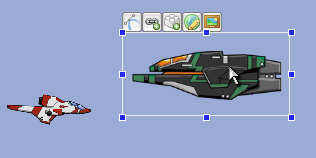
Figure
4.1.1
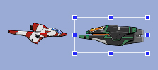
Figure
4.1.2
Now that we have our enemy, let's get them moving across the screen. Like the player ship, we will need to give this enemy a name and a class. Go into the Edit tab with the enemy selected and type in the name “eShip” and a class of “enemyShip”. Again we should save our progress and close down T2D. Browse out to your yourProjectName/gameScripts folder, the same folder we created our player.cs file, add a new text file named enemy.cs
Inside your enemy.cs file, add the following code:
function enemyShip::onLevelLoaded(%this, %scenegraph)
{
%this.enemyMovement();
}
function enemyShip::enemyMovement(%this)
{
%this.setLinearVelocityX(getRandom(%this.minSpeed, %this.maxSpeed));
}
Code Sample 4.1.1
All this function does is call a movement function for the enemy that sets its speed along the X axis to a random variable between minSpeed and maxSpeed. Again, these are variables that don't exist yet, so we will create it the same way we created the variables for the player's ship – the dynamic fields box. But first we need to get the engine to run the code we just wrote.
To do this, we again need to browse out to our main games/yourProjectName/gameScripts folder and open up our game.cs file. When you get your file open, you need to find this line of code again:
exec("./player.cs");
Once you have located
this, add this line of code right below it:
exec("./enemy.cs");
Code Sample 4.1.2
As with before, this just tells your game to run your enemy.cs file when it loads up. Now that the game will run your code, let's add hSpeed to our enemy and get it to move across the screen!
Open the Level Builder back up and select the enemy ship. Add a minSpeed and maxSpeed variable with values of your desire. I wanted my enemies to move quickly, so I chose -175 and -225, respectively. You will need to remember that your enemy is moving in the opposite direction as you, so the numbers for their speeds will also need to be opposite, hence the negative numbers. Once you have your speed range set, go back into the game and check out the results (as shown in Figure 4.1.3)!
|
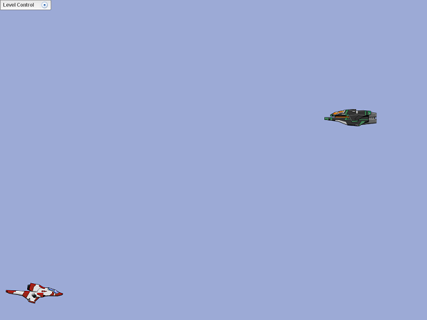 |
|
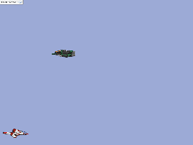 |
The enemy sprite will keep moving with this velocity, unless we tell it not to any more. As you surely noticed very quickly, when the enemy zooms by the player, they go off screen never to be seen again. This is not desirable since we want to fight the enemy more than once. So, we are going to set it up so that our enemy respawns in a random Y location when they hit the outer edge of their world limit.
In order to respawn our enemy, we need to figure out at what point to respawn him and where to respawn him. Luckily, since we know where our enemy's world limit is, we can use this as a means to determine when to respawn them. First, we need to adjust our enemy's world limit. Select our enemy and change the world limit to be just outside of the camera view (as shown in Figure 4.2.2). We do this so that the enemy will spawn outside of the screen view and fly completely off of our screen view before we respawn them, so it gives the illusion of multiple enemies.
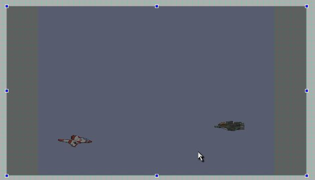
Figure
4.2.2
Now that you have your enemy's world limit set properly, you should move them outside of the camera view. Also, just to save us some time before we code- select your enemy and go into the dynamic fields rollout of the edit tab. Create two new fields named minY and maxY. The values for these fields should be highest on the screen you want the enemy to spawn, and the lowest on the screen.
Not sure what those numbers are? You can easily find out by selecting your enemy ship and moving it to the maximum Y location you want it to spawn. Then, get into the Scene Object rollout and see what Y location that is (as shown in Figure 4.2.3).
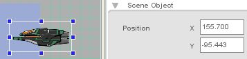
Figure 4.2.3
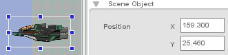
Figure 4.2.4
Once you have those numbers, fill in the values for your minY and maxY.
Next, we want to make sure that when our enemy hits the edge of their limit we get a callback from the engine. To do this, click on the edit tab of the enemy ship and expand the World Limit rollout (as shown in Figure 4.2.5).
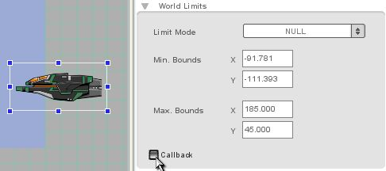
Figure
4.2.5
Now that we have our dynamic fields set up (as shown in Figure 4.2.6), our world limits worked out, we are ready to plug in the code that will make our ship work how we want it to. Save your progress and close out of the engine. Open up your enemy.cs file and insert the following code into it – note that we are completely reworking some of the functions that we created earlier to get the enemy's movement working properly. We will start with the onLevelLoaded function:
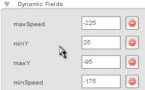
Figure
4.2.6
function enemyShip::onLevelLoaded(%this, %scenegraph)
{
%this.startX = %this.getPositionX();
%this.spawn();
}
Code Sample 4.2.1
Compare this new function to the old version we originally put in our file:
function enemyShip::onLevelLoaded(%this, %scenegraph)
{
%this.enemyMovement();
}
We have completely taken out our enemyMovement() function because everything it does can be handled in the spawn() function we will be creating later. Also, you will notice this line:
%this.startX = %this.getPositionX();
What this basically does is say that whatever X position our enemy is in when the game starts is where it will start when we run the game. This allows us to control the X position of the enemy's start inside the Level Builder.
The next function we will create will handle what happens when the enemy hits the edge of their world limit:
function enemyShip::onWorldLimit(%this, %mode, %limit)
{
if(%limit $= "left")
{
%this.spawn();
}
}
Code Sample 4.2.2
What this function does is wait for the callback when the enemy hits the left edge of their world limit. When they hit the limit, it calls the spawn() function:
function enemyShip::spawn(%this)
{
%this.setLinearVelocityX(getRandom(%this.minSpeed, %this.maxSpeed));
%this.setPositionY(getRandom(%this.minY, %this.maxY));
%this.setPositionX(%this.startX);
}
Code Sample 4.2.3
This function handles what happens when the enemy is spawned. The first line is cut out of the old enemyMovement() function that we deleted – it sets a random speed to give the enemy. The next line chooses a random starting place along the Y axis to spawn the enemy on. The third line places the enemy on the X position they were when we started the level.
We have made a lot of changes, let's make sure that our code looks the same. This is what your enemy.cs file should look like right now:
function enemyShip::onLevelLoaded(%this, %scenegraph)
{
%this.startX = %this.getPositionX();
%this.spawn();
}
function enemyShip::onWorldLimit(%this, %mode, %limit)
{
if(%limit $= "left")
{
%this.spawn();
}
}
function enemyShip::spawn(%this)
{
%this.setLinearVelocityX(getRandom(%this.minSpeed, %this.maxSpeed));
%this.setPositionY(getRandom(%this.minY, %this.maxY));
%this.setPositionX(%this.startX);
}
Code Sample 4.2.4
If your code matches, save your script file and reload the engine. When you run your new game, you should see your enemy flying across the screen at you, disappear behind you, and then respawn at a different Y location (and speed) and fly at you again (as shown in Figure 4.2.7)!
|
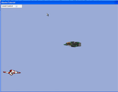 | 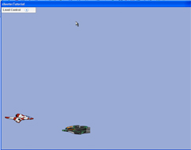 Figure_4.2.7b |
You may be saying to yourself “Yeah, this is cool, but I want to battle hordes of enemies.” Well, thanks to the class system in T2D and the way we set up our code, making that dream a reality is as simple as copy/paste – literally!
To add multiple enemies, simply go into the Level Builder, click on your enemy, type CTRL+C for copy and CTRL+V as many times as you want to paste. NOTE: All of your new enemy instances will paste directly on top of the original enemy, so don't worry when you still only see one enemy.
Now that you have multiple enemies in the level, you can move them around so that they start with different X locations. Plus, with the way we set up our code, when we test our level, they will all start at different Y locations and have different speeds! Test it out (as shown in Figure 4.3.1)!
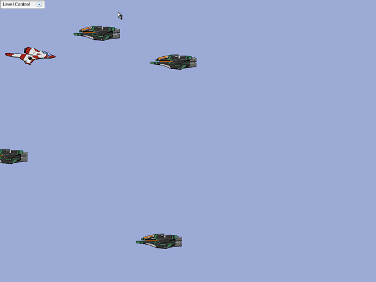
Figure
4.3.1a
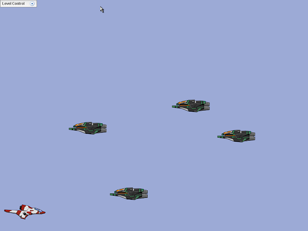
Figure
4.3.1b
Now that we have our player and enemies moving, we need to get them firing weapons at each other!